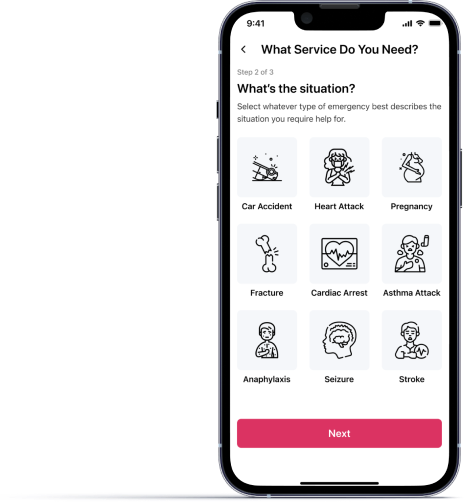
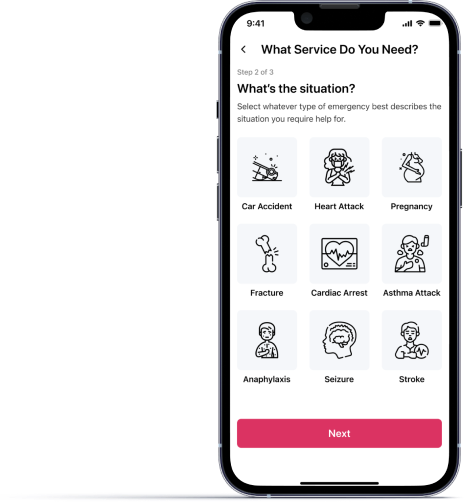

FirstAider
Prompt assistance to every Nigerian anywhere

FirstAider
Prompt assistance to every Nigerian anywhere
| Role | Team | Tools | Timeline |
|---|---|---|---|
| Product Designer | Group Project | Figma | 3 weeks |
| UX Researcher |
PROBLEM
Getting medical help in cases of emergency can be very hard if not almost impossible for the aveerage Nigerian.
In cases of accidents or critical health conditions, getting victims to the nearest health care centre in quick time can prove imposiible given the conditions of our roads, traffic congestion and the need for police reports can also make things even worse.
DESIGN CHALLENGE
How might we allow the average Nigerian gain access to prompt medical assistance whenever the need arises?
SOLUTION
Granting users access to fast medical assistance and medical services, from anywhere and at any time.
 


The application allows users to add emergency contact and automatically sends SMS alerts incase of emergency.
The app allows a multiple profile feature that enables a user to save the health profile of close ones.


Users are on a subscription-based membership. FirstAider is able to partner with network of hospitals and paramedical agencies that are available on the go to offer first-aid services. This allows users to be connected to the nearest partner at request.
USER RESEARCH
We started by making research online on how medical emergency services work in order to gain insight and gather information fo rour solution. Our research gave us a better understanding of the difficulties Nigerians face in getting medical assistance in cases of emergency.
We did a competitive analysis of existing solutions on appstore and playstore. We wanted to understand the flow, learn from them with the aim to improve.

IDEATION
We then created a basic userflow to understand how users will interact with the application.
PROTOTYPE

TAKEAWAYS
The group project was an exciting experience for me. I learnt how to collaborate with a team of designers led by a design mentor. I learnt from fellow designers and this helped me to brush up my UI design skills.
Got a project?
Send me and email at olutemitopefamuyiwa@gmail.com or find me on